Префектура Нара · Нара, Касиба, Хигасиёсино · ремёсла
Ремёсла Нары за два дня: тушь, папье-маше, горная деревня и галерея
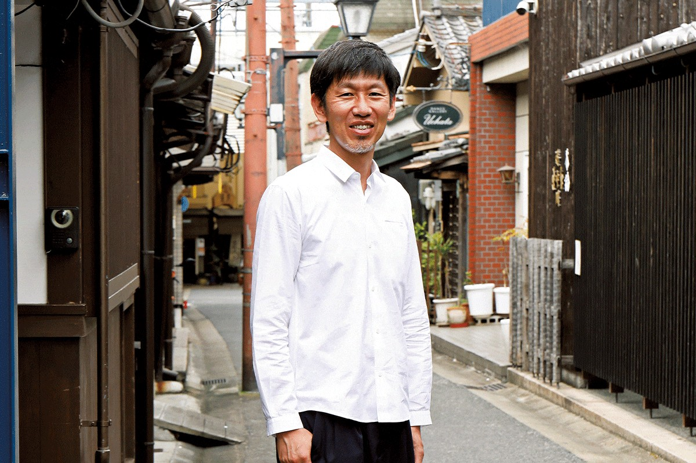
Глава одной из старейших ремесленных фирм Японии уверен, что ремеслу нельзя застывать. По его маршруту за два дня в Наре можно увидеть, как меняются тушь, игрушки из папье-маше и сама профессия мастера.
Взгляд
Ремесло, которое не стоит на месте
Девиз старинной нарской фирмы Nakagawa Masashichi Shoten звучит как «Вернуть силы японским ремёслам». Председатель компании, тринадцатый глава семьи, известен в Японии как специалист по управлению и брендингу ремесленных производств. Осенью 2020 года он предложил нам маршрут по Наре, в котором ремесло можно и потрогать, и обдумать.
«Слыша слово „ремесло“, все представляют себе „традиционное ремесло“. Но у традиции есть и обратная сторона. Автомобильной промышленности больше ста лет, а её никто не называет „традиционной“, потому что она развивается. Слово „традиционный“ прилипает к тому, что перестало меняться и стало не нужно в жизни. Поэтому я выбрал места, где видно, как ремесло меняется вместе со временем»
председатель Nakagawa Masashichi Shoten
День первый, 12:00
Yu Nakagawa: ткани и олени
Маршрут начинается в квартале Нарамати, в главном магазине Yu Nakagawa. Это марка тканевых мелочей, сделанных японскими красильщиками. В 2020 году здесь стояли старые ткацкие станки и платок, который фирма выставляла на Всемирной выставке в Париже в 1925 году, так что возраст дома чувствуется сразу. В 2021 году магазин стал частью нового главного магазина компании в Shikasarukitsune Building.
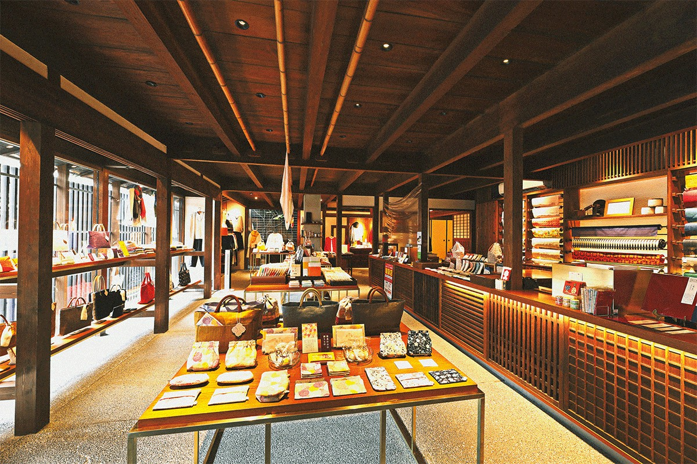
Среди товаров много оленей, символа Нары: олень с цветами сидит на вазочке для одного цветка, олени из вафельного теста лежат в жестянке сладостей, олени и травы украшают мешочек для чайной утвари.
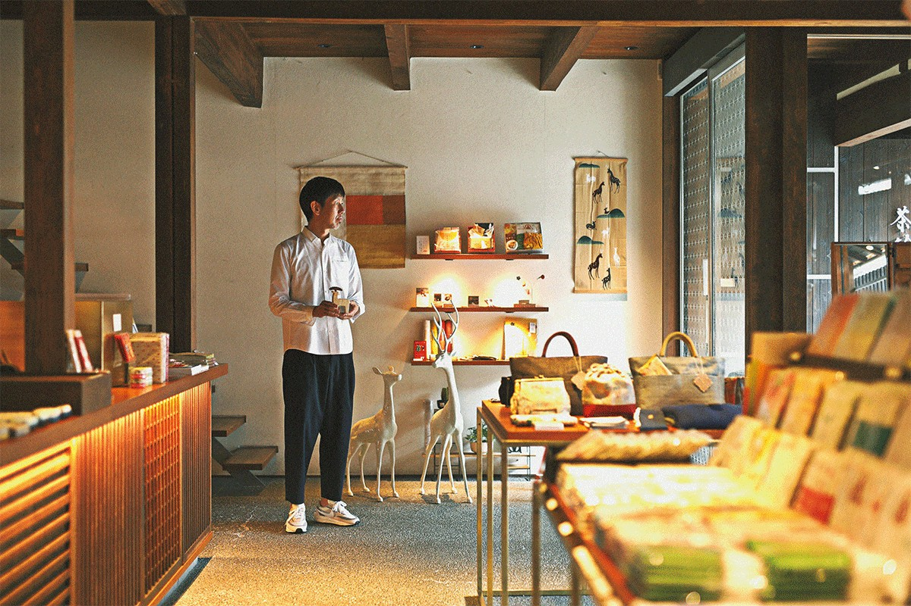
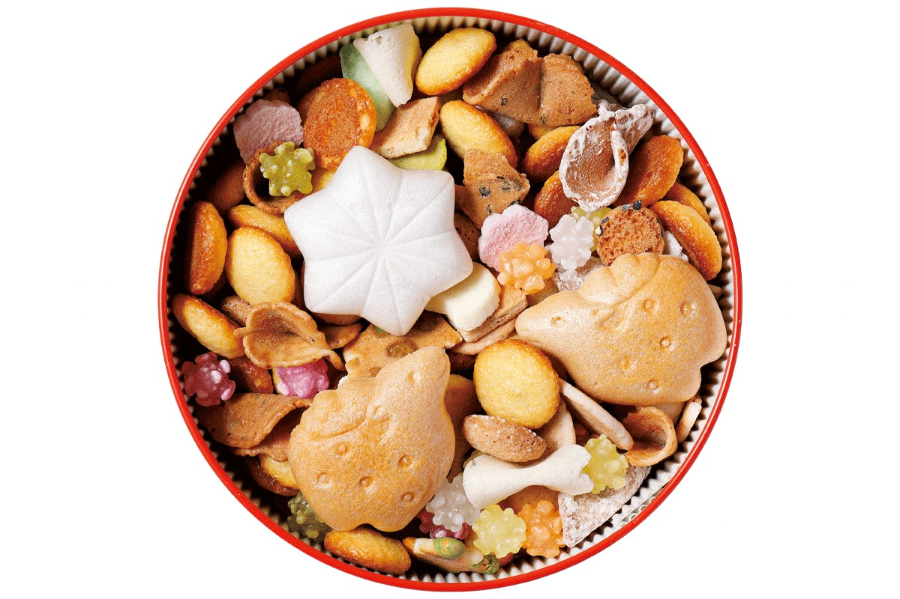
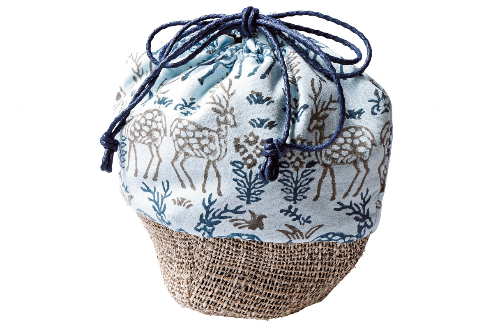
Yu Nakagawa, главный магазин (с 2021 года часть главного магазина Nakagawa Masashichi Shoten)
- Адрес
- префектура Нара, Нара, Ганриин-тё, 31-1
- Телефон
- +81 742-22-1322
- Часы работы
- 11:00–18:00
- Выходные
- без выходных
Чай
Saron: передышка с чашкой маття
Рядом с Yu Nakagawa работает Saron, чайная марка той же компании. Её задумали, чтобы открыть дверь в культуру чайной церемонии тем, кто к ней ещё не подступался. Чайная занимает перестроенный дом-матия, которому больше 120 лет: здесь пьют чай и выбирают чайную утварь.
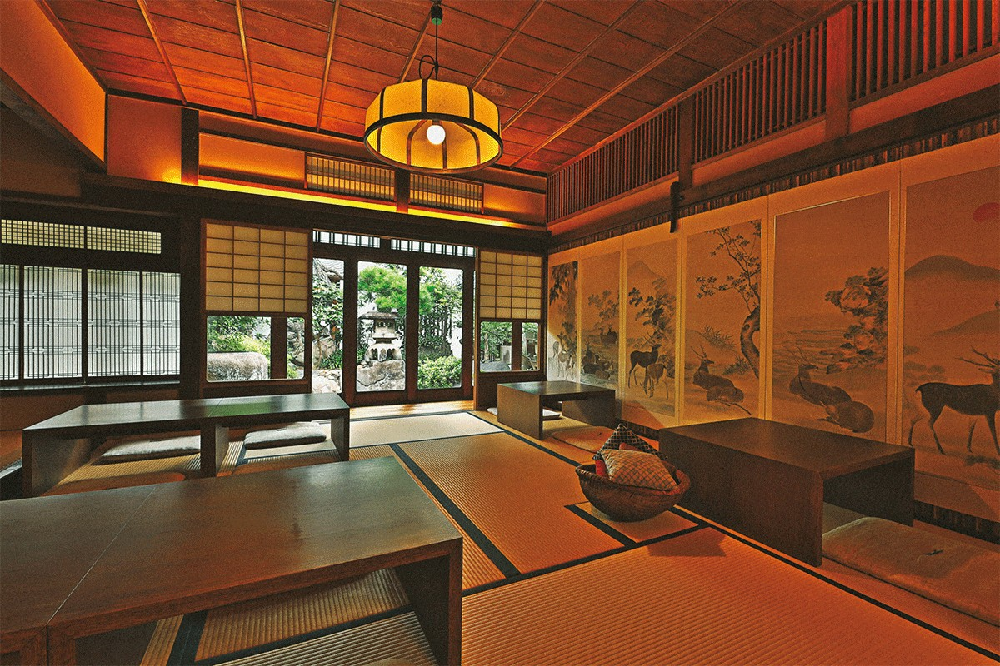
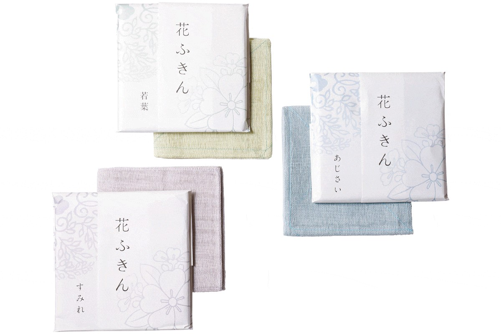
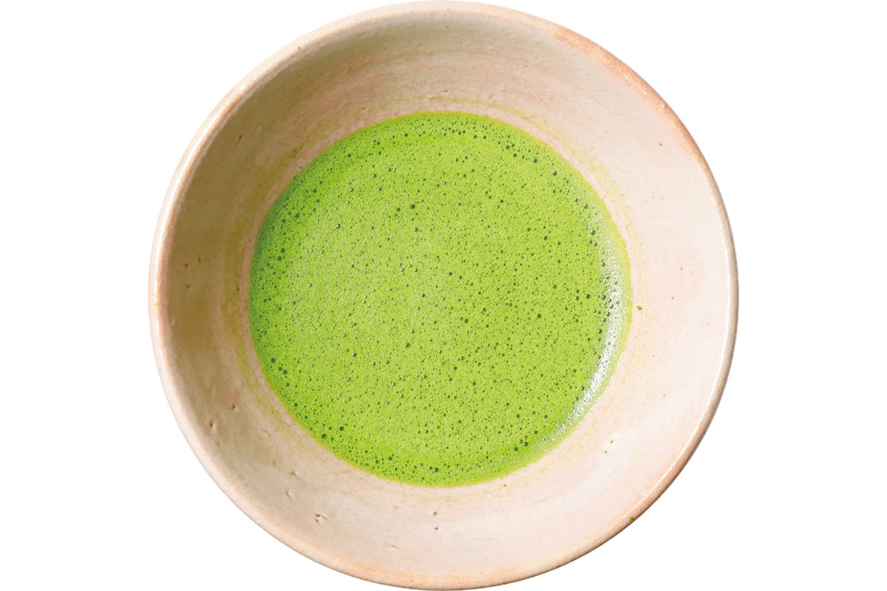
В Saron продают и собственную посуду. Например, чаши в стиле карацу-яки, которые делают под надзором известного гончара печи «Рёун-гама». Их ценят за сморщенную глазурь и живую фактуру глины.
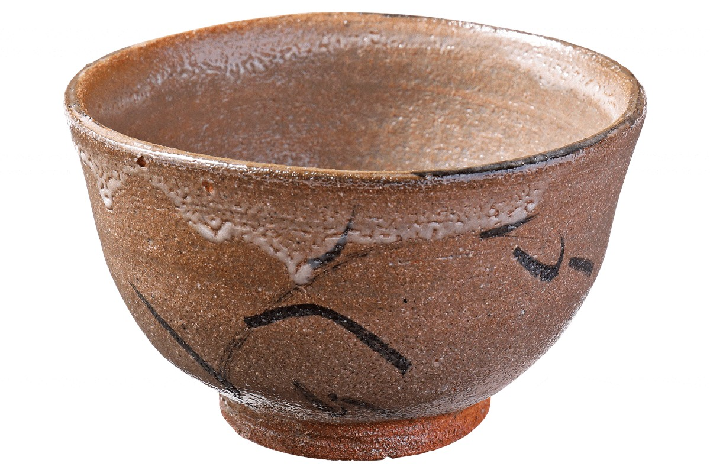
Saron, магазин в Нарамати
- Адрес
- префектура Нара, Нара, Ганриин-тё, 31-1
- Телефон
- +81 742-93-8833
- Часы работы
- 11:00–17:30 (последний заказ)
- Выходные
- без выходных
- Сайт
- salon-tea.jp
14:30
Kinkoen: тушь, сжатая в ладони
Тушь нарадзуми делают в Наре с эпохи Муромати (1336–1573), и она давно стала одним из главных ремёсел города. Мастерская Kinkoen делает её вручную с эпохи Мэйдзи (1868–1912). В 2020 году ею руководила мастер седьмого поколения, за работой которой председатель внимательно следил: в 2018 году она прошла его курс по управлению и брендингу и как раз тогда придумывала новый товар.
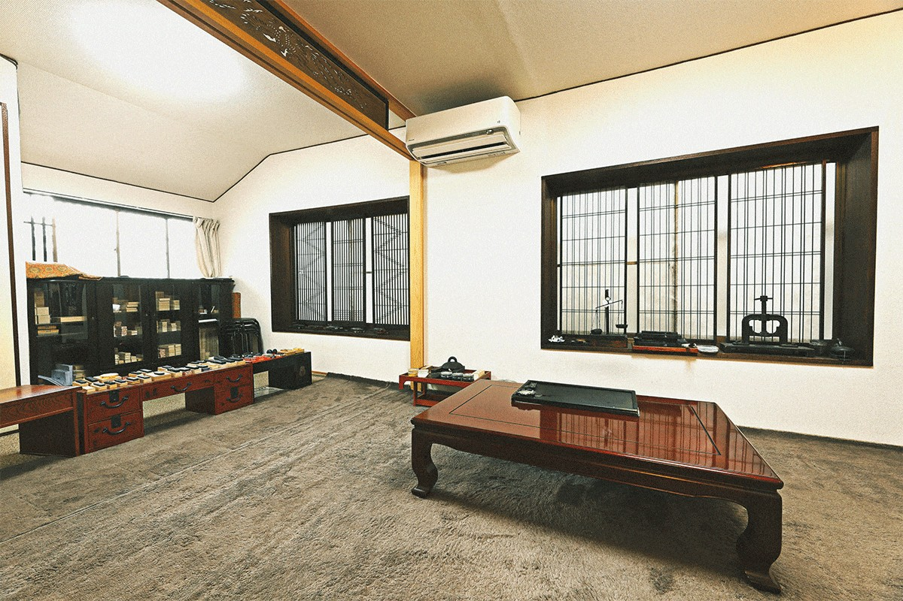
После курса появилась ароматная тушь «Каори-дзуми Asuka». Бруски повторяют маски гигаку, древнего японского театра масок: птицу Карура, силача Рикиси и девушку Годзё. Эти маски считаются счастливыми.
«В этом товаре мастерская взяла не только старые приёмы, но и новые. В нём чувствуется движение вперёд. И ещё они охотно проводят мастер-классы по „нигири-дзуми“»
председатель Nakagawa Masashichi Shoten
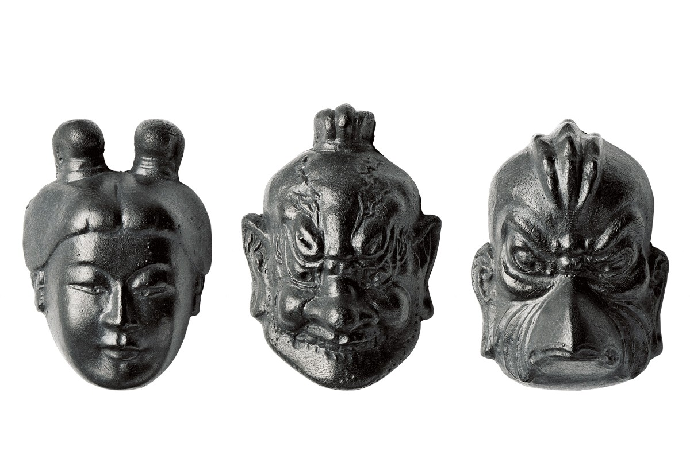
«Нигири-дзуми» значит «сжатая тушь». Сырую массу туши сжимают в кулаке, и на бруске остаются форма ладони и отпечатки пальцев, так что двух одинаковых не бывает. Мастерская стремится стать проводником в мир нарской туши, и это единственное место, где такой мастер-класс проводят круглый год. Занятие идёт 30–40 минут, записываться нужно заранее.
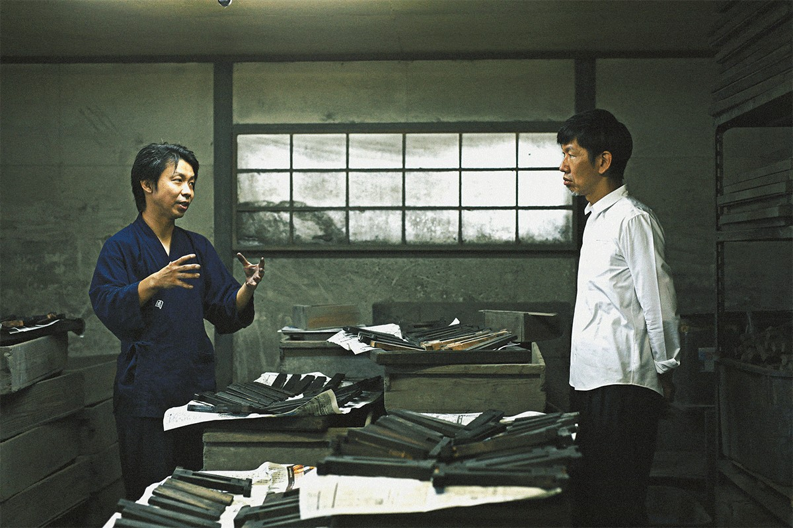
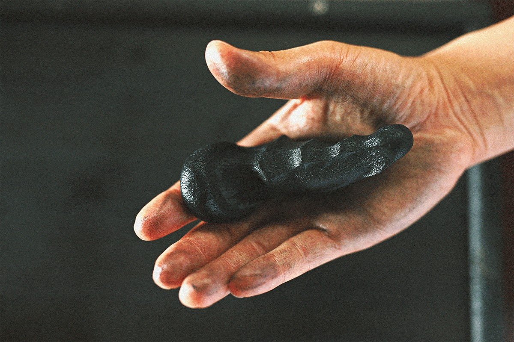
Kinkoen
- Адрес
- префектура Нара, Нара, Сандзё-тё, 547
- Телефон
- +81 742-22-3319
- Часы работы
- 9:00–19:00 (мастер-класс по предварительной записи)
- Выходные
- нерегулярно
- Сайт
- kinkoen.jp
16:00
Good Job! Center Kashiba: папье-маше с 3D-принтера
Из Нары едем на запад префектуры, в город Касиба. Good Job! Center Kashiba открылся в 2016 году. Это социальный центр, где работают люди с инвалидностью, и одновременно открытое для всех место с кафе и магазином. На первом этаже кафе, галерея и мастерская с цифровыми станками, на втором магазин.
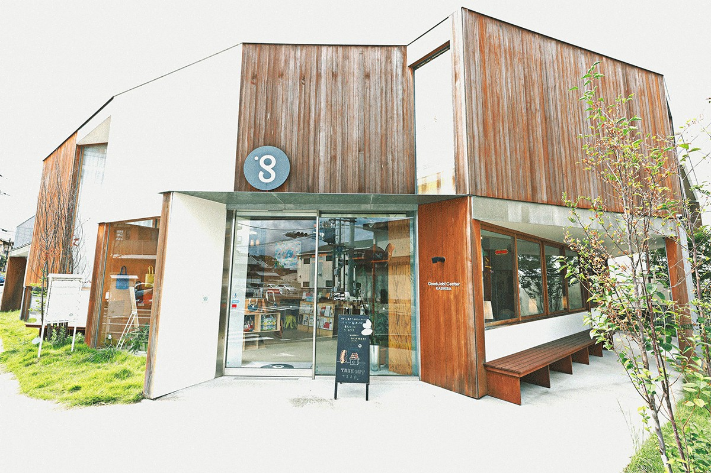
С этим центром Nakagawa Masashichi Shoten сделала игрушку из папье-маше «Сика корокоро», оленя на колёсиках.
«Мы задумали новую игрушку из папье-маше, но в префектуре не осталось ни одного действующего мастера, и я не знал, что делать. Тогда мы и познакомились. Вместо старых деревянных форм здесь используют 3D-принтер, и люди, которые работают в центре, стали новыми мастерами ремесла»
председатель Nakagawa Masashichi Shoten
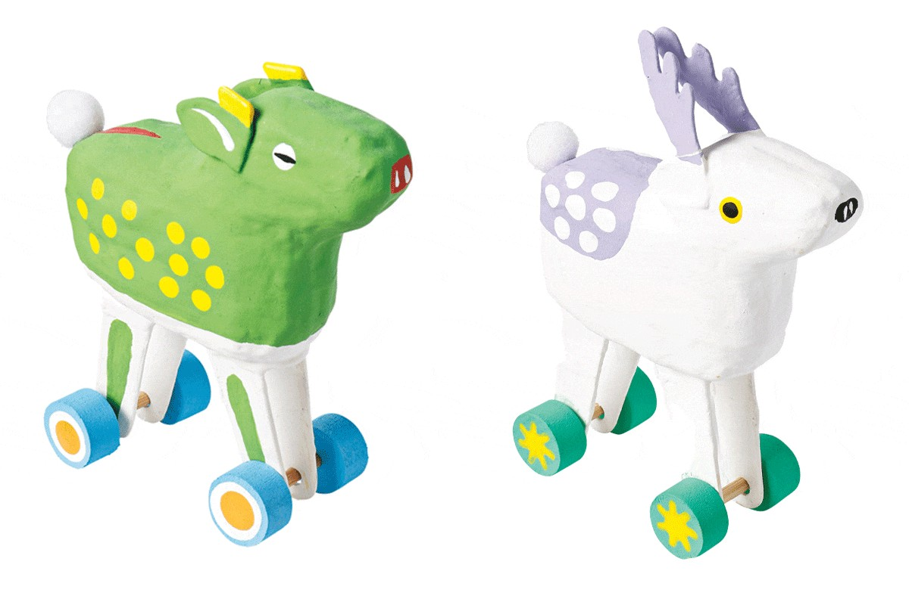
Центр делает и свои игрушки. Одна из них Амабиэ, морской дух из японских преданий, который, по поверью, защищает от эпидемий. Её сделали в 2020 году, когда страна сидела дома из-за коронавируса, и прислали председателю как осенний подарок. «Такое гибкое производство тоже ремесло», говорит он.
На втором этаже продают не только своё. Здесь собраны вещи и одежда из социальных мастерских со всей Японии, и по этим необычным товарам видно, на что такие мастерские способны.
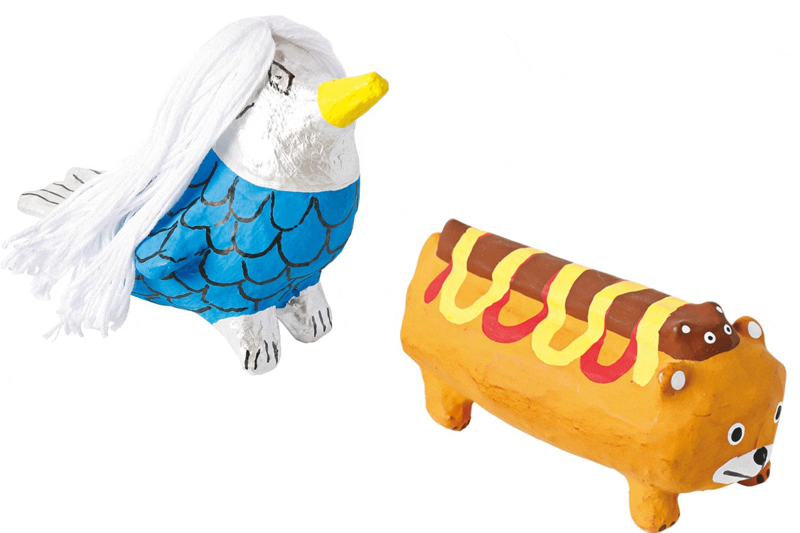
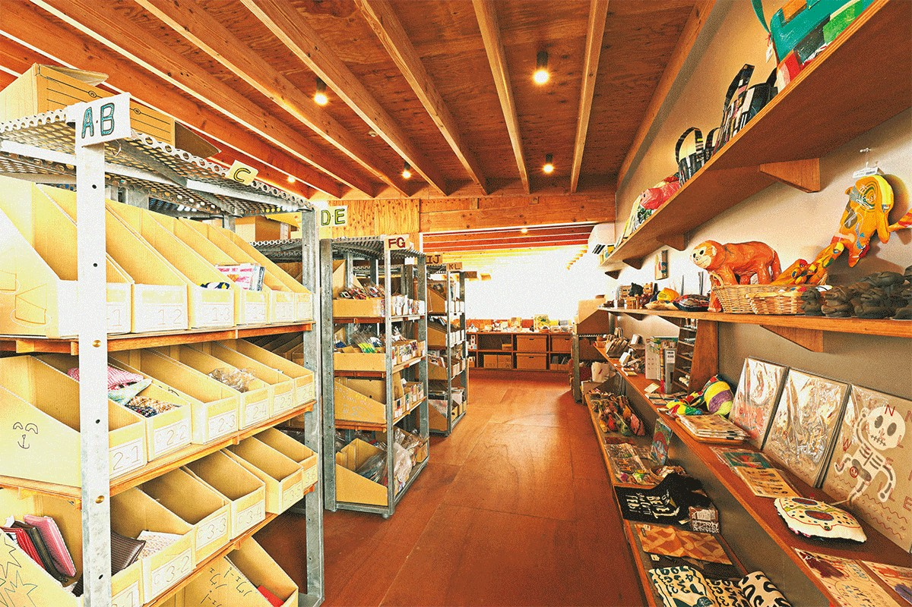
Good Job! Center Kashiba
- Адрес
- префектура Нара, Касиба, Симода-ниси, 2-8-1
- Телефон
- +81 745-44-8229
- Часы работы
- 10:00–17:00 (кафе и магазин с 11:00)
- Выходные
- воскресенье, праздничные дни
18:00
JW Marriott Hotel Nara: ночлег
Ночуем в JW Marriott Hotel Nara, который открылся в июле 2020 года. В отеле есть спа, рестораны и лаундж-бар, а отдельного внимания заслуживают программы по практике осознанности.
JW Marriott Hotel Nara
- Адрес
- префектура Нара, Нара, Сандзё-Одзи, 1-1-1
- Телефон
- +81 742-36-6000
- Цены / Вход
- от 40 000 иен за ночь без налога и сервисного сбора
День второй, 12:00
Office Camp Higashiyoshino: дизайнеры в горах
Второй день начинается в горах на юго-востоке префектуры, в деревне Хигасиёсино. Председатель убеждён, что будущему ремесла нужны дизайнеры рядом с мастерскими. Ремёсла живут в провинции, а дизайнеры собираются в больших городах.
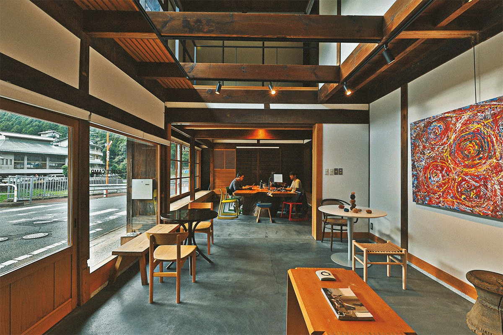
Office Camp Higashiyoshino как раз про это. Это общий офис и коворкинг, вокруг которого объединились режиссёры, дизайнеры, фотографы и другие творческие люди. Заплатив за вход, здесь может поработать любой. Для тех, кто подумывает переехать в деревню, это ещё и первая дверь в местную жизнь.
«Во всех краях Японии, где сейчас оживают ремёсла, обязательно есть ключевой человек из творческих профессий. То, что они живут в горных деревнях Нары, очень важно для ремесла»
председатель Nakagawa Masashichi Shoten
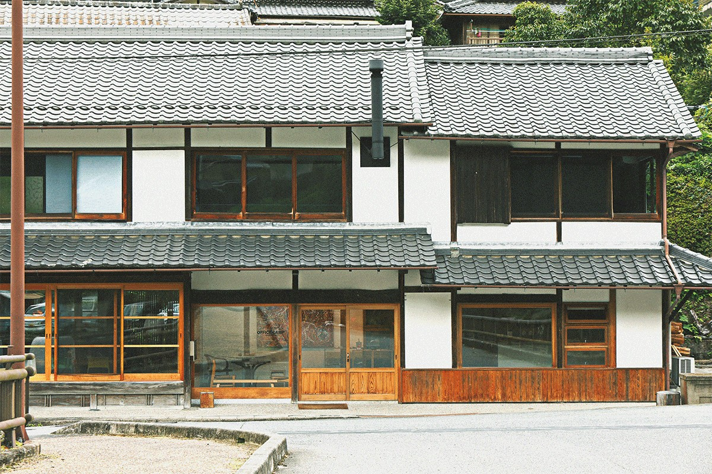
Office Camp Higashiyoshino
- Адрес
- префектура Нара, уезд Ёсино, деревня Хигасиёсино, Огава, 610-2
- Телефон
- +81 746-48-9005
- Часы работы
- 10:00–16:30
- Выходные
- вторник, среда
- Сайт
- officecamp.jp
14:30
Horiuchi Kajitsuen: фрукты вместо закуски
Возвращаемся в Нару на поздний обед. Horiuchi Kajitsuen это нарская марка японских сушёных фруктов, а её магазин в Наре задуман как место, где фруктами наслаждаются. Для председателя это был первый консалтинговый проект в Наре. У марки есть магазины ещё в Токио и Осаке.
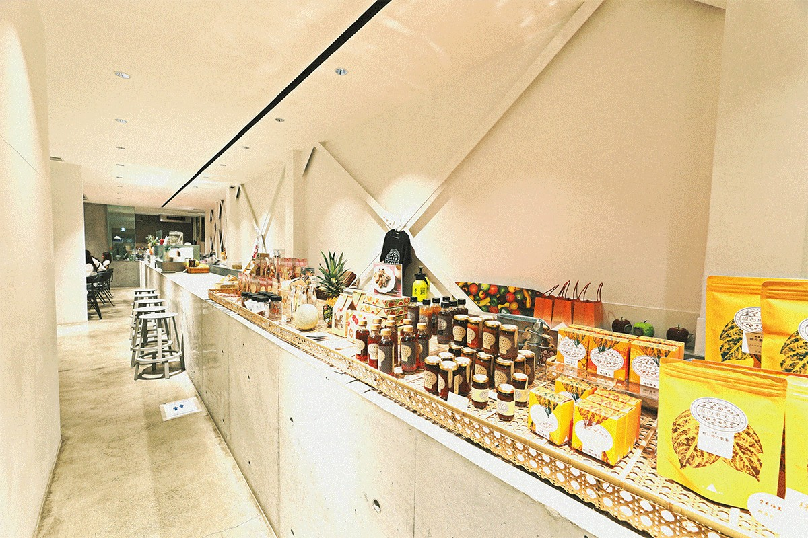
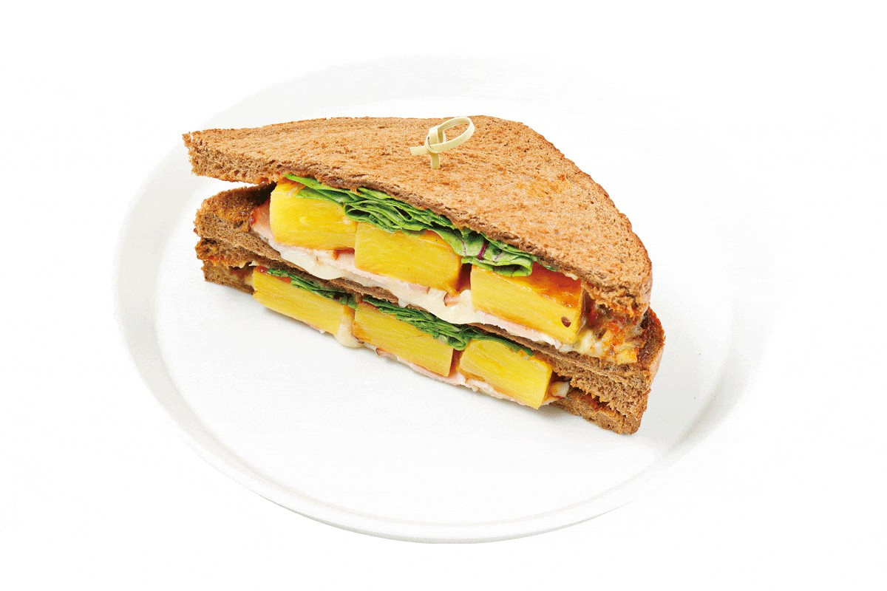
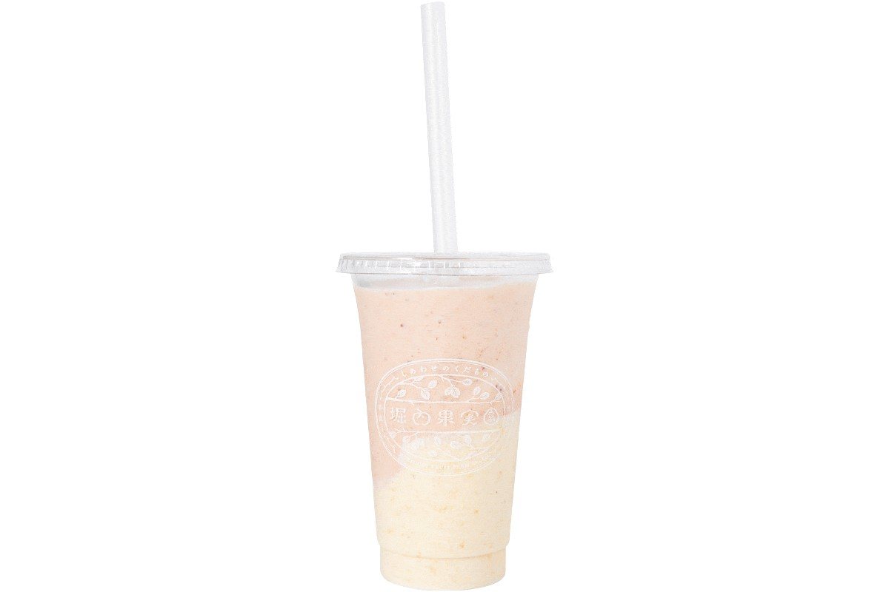
Председатель видит в таких местах будущее ремесла: дело уже не только в вещи, а в людях за ней и в их взглядах на жизнь.
Horiuchi Kajitsuen, магазин Nara Sanjo
- Адрес
- префектура Нара, Нара, Цунофури-тё, 23
- Телефон
- +81 742-93-8393
- Часы работы
- 10:00–18:00 (последний заказ)
- Выходные
- без выходных
16:30
HJ GALLERY: витрина для авторов
Последняя остановка на северо-западе города. HJ GALLERY открыла в июне 2020 года строительная фирма «Ходзё комутэн». Она с уважением относится к старой японской архитектуре и строит дома, в которых, как она сама говорит, жизнь становится богаче. Галерея задумана как место, где хорошо есть, одеваться и жить.
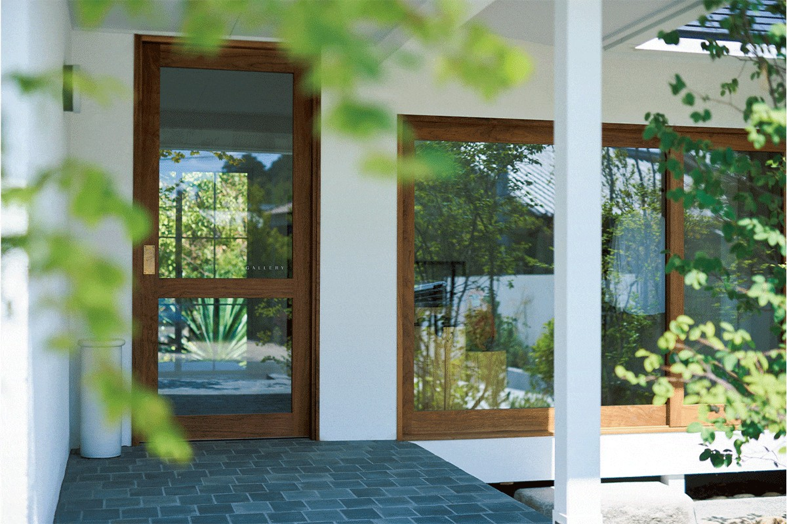
Председатель называет галерею «выходом» для ремесла. Мастерские вроде его компании умеют делать много вещей разумно и без лишних затрат. А у авторов, которые работают сами, с известностью растут цены, и им нужно место, где их работы встретятся с покупателем. В Наре эту роль хорошо играет HJ GALLERY.
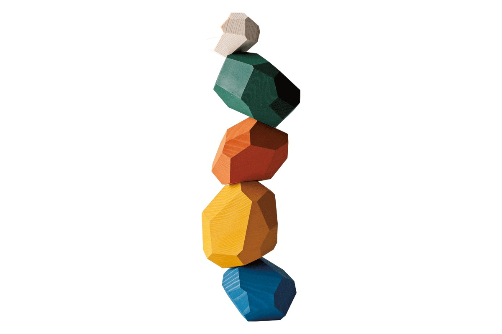
HJ GALLERY
- Адрес
- префектура Нара, Нара, Мицугарасу, 2-4-13-2
- Телефон
- +81 742-52-5000
- Часы работы
- 11:00–16:00
- Выходные
- воскресенье–среда
- Сайт
- hj-g.jp
Итог
От вещей к людям
Если смотреть на Нару через ремесло, у старого города появляется новое лицо. Интересно не только то, что сделано, но и то, что думают люди, которые это делают.
«Связь ремесла с местом скоро будет держаться не на местных материалах, а на людях, которые давно здесь живут. Как они прожили жизнь, что для них важно: всё это видно в вещи и решает, купят её или нет. Говорили, что раньше было время вещей, а сейчас время стиля жизни. Мне кажется, дальше наступит время жизненной позиции»
председатель Nakagawa Masashichi Shoten
Фото: Норихито Судзуки.